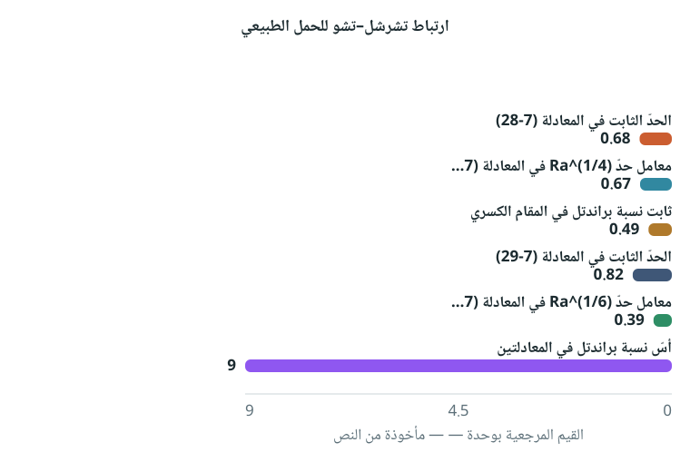

ارتباط تشرشل–تشو للحمل الطبيعي
Churchill-Chu Correlation
علاقتان تجريبيتان لعدد نوسلت في الحمل الطبيعي على صفيحة رأسية: صيغة صفحية صحيحة حتى Ra = 10⁹، وصيغة عامة تغطي الصفحي والمضطرب معًا حتى Ra = 10¹².
ارتباط تشرشل–تشو علاقتان تجريبيتان لعدد نوسلت في الحمل الطبيعي على صفيحة رأسية. الصيغة الصفحية، المعادلة (7-28) عند Holman: Nu = 0.68 + 0.670·Ra^(1/4)/[1 + (0.492/Pr)^(9/16)]^(4/9)، صالحة لـRa < 10⁹ وتمثّل تمثيلًا مُرضيًا أيضًا حالة التدفق الحراري الثابت. والصيغة العامة، المعادلة (7-29): Nu^(1/2) = 0.825 + 0.387·Ra^(1/6)/[1 + (0.492/Pr)^(9/16)]^(8/27)، صالحة لـ10⁻¹ < Ra < 10¹² وتغطي النطاقين في علاقة واحدة بلا حدّ فاصل معلن.
الحساب عند Ra = 10⁸ وPr = 0.7: العامل (0.492/0.7) = 0.7029، وأسه 9/16 يعطي 0.8201، فالمقام الأساسي 1.8201. في (7-28) يكون Ra^(1/4) = 100، و0.670×100 = 67.0، والمقام 1.8201^(4/9) = 1.3049، فالحدّ 67.0/1.3049 = 51.34، وNu = 0.68 + 51.34 = 52.02. وفي (7-29) يكون Ra^(1/6) = 21.54، و0.387×21.54 = 8.338، والمقام 1.8201^(8/27) = 1.1942، فالحدّ 6.982، وNu^(1/2) = 0.825 + 6.982 = 7.807، وNu = 60.95.
الفارق بين النتيجتين 17.2% عند Ra = 10⁸، وهو أكبر من انحراف 10% الذي ينسبه Holman إلى العلاقات المبسّطة من نوع Nu = C·Ra^m. وسبب الفارق أن (7-29) مبنية لتصل إلى السلوك المضطرب عند Ra قريب من 10⁹، فترفع القيمة قبل عبور الحدّ، بينما (7-28) مقيّدة بالحلّ الصفحي. ولهذا تُختار الصيغة بحسب السؤال: قيمة صفحية عند Ra < 10⁹، أو منحنى واحد متصل على ثلاثة عشر رتبة عشرية.
كيف تعمل الظاهرة؟
الحمل الطبيعي يبدأ من اختلاف الكثافة: الطبقة الملاصقة للسطح تُسخَّن فترقّ وتطفو، فيتكوّن جريان صاعد بسماكة متزايدة. في الطرف الأمامي يكون الجريان صفحيًا وتنمو الطبقة الحدّية كـx^(1/4)، فيتناسب معامل الحمل مع x^(-1/4) وينتج الأس 1/4 في نوسلت المحلي. وعندما يكبر Ra تقوى القوى الطافية على اللزوجة فتنشأ اضطرابات وتنتقل الطبقة إلى المضطرب، ويتغير النمو الأسّي إلى 1/3 تقريبًا في نوسلت المتوسط. العلاقتان تصفان هذا المسار بكسر يستبدل الحدّ الحادّ: في (7-28) يقود الأس 1/4 سلوك الصفحي، وفي (7-29) يقود الأس 1/6 جذر نوسلت، وهو مساوٍ لأس 1/3 في نوسلت نفسه. الحدّ الثابت 0.68 (أو 0.825 في الجذر) يمثّل الحمل عند Ra صغير جدًا، حيث تنفصل الطبقة الحدّية وتقترب المسافة من حجم الصفيحة.
العلاقة بالأرقام
Ra = g·β·ΔT·L³/(ν·α) وPr = ν/α، فالمنتج Ra·Pr غير مطلوب لأن Pr داخل المقام الكسري. عند Ra = 10⁸ وPr = 0.7: (0.492/0.7) = 0.70286؛ (0.70286)^(9/16) = 0.82009؛ 1 + 0.82009 = 1.82009؛ (1.82009)^(4/9) = 1.30486؛ Ra^(1/4) = 100؛ 0.670×100/1.30486 = 51.35؛ Nu = 0.68 + 51.35 = 52.03. وفي (7-29): Ra^(1/6) = 21.544؛ 0.387×21.544 = 8.3376؛ (1.82009)^(8/27) = 1.19416؛ 8.3376/1.19416 = 6.9820؛ Nu^(1/2) = 0.825 + 6.9820 = 7.8070؛ Nu = 60.95. والنسبة 60.95/52.03 = 1.1715 أي 17.2%. وتحويل النتيجة إلى معامل حمل: h = Nu·k/L، فلهواء k = 0.028 W/(m·K) وصفيحة بارتفاع 1 m تعطي h = 52.03×0.028/1 = 1.46 W/(m²·K) بالصيغة الصفحية و60.95×0.028/1 = 1.71 W/(m²·K) بالصيغة العامة.
مفاهيم متقاربة
الفرق عن Nu = C·Ra^m ليس تجميليًا: الصيغة المبسّطة تتطلب اختيار الحدّ، فمن يعتمد Ra = 10⁹ يخطئ في المدى 10⁸–10¹⁰ حيث لا حدّ فعلي. والفرق عن ارتباطات أخرى أن 0.68 و0.825 حدّان ثابتان مشتقان من سلوك Ra صغير، لا معاملات تجريبية حرة. والفرق عن نوسلت في الحمل القسري أن هنا السرعة ناتجة عن الحرارة نفسها، فلا يمكن تغيير Ra مستقلًا عن ΔT. والفرق عن حالة التدفق الحراري الثابت أن الأسس مختلفة في الكتاب، والاختيار بينهما يتبع شرط السطح لا سهولة الحساب. وأخيرًا، (7-29) ليست متوسطًا للصيغتين، بل ارتباط واحد بأساس كسري يجعل نوسلت دالة ناعمة في Ra.
حدود التطبيق
حدود الصلاحية صريحة: سطح رأسي مستوٍ في حيّز واسع لا محصور، وخصائص تُقيَّم عند T_f لا عند T_s ولا T_∞، وخطأ ثلاث نسب مئوية في لزوجة الهواء عند T_f يزيح Ra بنسبة مماثلة. وRa معلوم الحدّين: أقل من 10⁹ في (7-28) وسالب اللوغاريتم إلى 10¹² في (7-29)؛ والاستقراء فوق 10¹² غير مدعوم بتجربة. والصيغة لا تصلح لسطح مسخّن بفيض غير منتظم توزيعًا حادًّا، ولا لصفيحة مائلة بإمالة كبيرة (تتغير ثوابت الأس)، ولا لوسط لا يسري فيه قانون الغاز المثالي كالسوائل القريبة من النقطة الحرجة. وفي الهواء الرقيق جدًا (Kn كبير) يسقط افتراض الاستمرارية أصلًا، وفي المعادن السائلة يؤثر المجال المغناطيسي على β. وأخيرًا لا تُستعمل مع سطح ذي زعانف كثيفة تمنع الجريان الحر، ولا داخل حيّز محصور قريب الأبعاد حيث يتحول الحمل إلى خلية دوّارة.

| الكمية | القيمة | المصدر |
|---|---|---|
| الحدّ الثابت في المعادلة (7-28) | 0.68 — | [1] |
| معامل حدّ Ra^(1/4) في المعادلة (7-28) | 0.670 — | [1] |
| ثابت نسبة براندتل في المقام الكسري | 0.492 — | [1] |
| الحدّ الثابت في المعادلة (7-29) | 0.825 — | [1] |
| معامل حدّ Ra^(1/6) في المعادلة (7-29) | 0.387 — | [1] |
| أسّ نسبة براندتل في المعادلتين | 9/16 — | [1] |
| أسّ المقام الكسري في المعادلة (7-28) | 4/9 — | [1] |
| أسّ المقام الكسري في المعادلة (7-29) | 8/27 — | [1] |
| أسّ نصف القوة في المعادلة (7-29) | 1/2 — | [1] |
| عدد نوسلت بالمعادلة (7-28) عند Ra = 10⁸ وPr = 0.7 | 52.03 — | [1] |
| عدد نوسلت بالمعادلة (7-29) عند Ra = 10⁸ وPr = 0.7 | 60.95 — | [1] |
| انحراف العلاقة المبسّطة عن (7-29) كما يذكره Holman | 10 % | [1] |
المصادر
استشهد بهذا المصطلح
الصيغتان مبنيتان من بيانات الصفحة نفسها: العنوان والتاريخ ورابط النسخة المنشورة.
ارتباط تشرشل–تشو للحمل الطبيعي — Churchill-Chu Correlation. (2026). ديوان المعرفة — انفراد. https://infiradev.com/diwan/terms/term-churchill-chu.html
@misc{term-churchill-chu2026,
title = {ارتباط تشرشل–تشو للحمل الطبيعي},
titleaddon = {Churchill-Chu Correlation},
howpublished = {{ديوان المعرفة — انفراد} — مرجع علمي عربي},
year = {2026},
url = {https://infiradev.com/diwan/terms/term-churchill-chu.html},
urldate = {2026-11-26},
note = {مراجعة علمية: hermes — مراجعة آلية بالتكليف 2026-11-26}
}
راجعه: hermes — مراجعة آلية بالتكليف 2026-11-26 · 2026-11-26 · آخر تحديث 2026-11-26